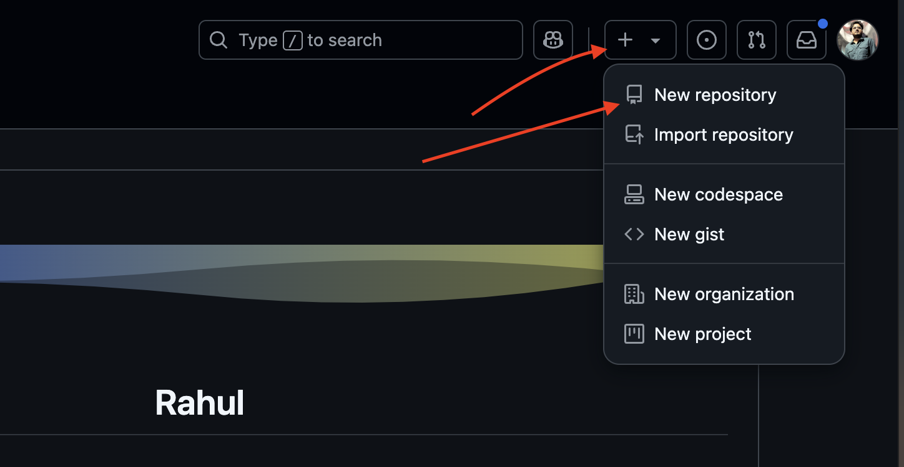
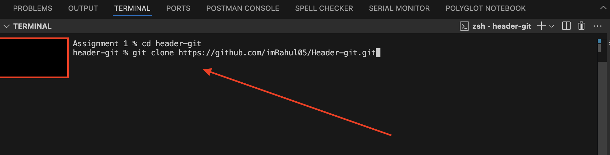

How to setup Github repo
Step 1: Create a new repository
Go to your GitHub account and click on the "New" button to create a new repository.

Step 2: Setup GitHub repo in GitHub

Step 3: Copy the remote_repository_url
Go to code button inside your repo and copy the HTTPS link

Step 4: Navigate to your project directory
Use the `cd` command to navigate to the directory of your project.
cd path/to/your/project

Step 5: Initialize a new Git repository
Run the following command to initialize a new Git repository:
git init
Step 6: Add your files to the staging area
Add all the files in your project directory to the staging area using the following command:
git add .
Step 7: Commit your changes
Commit your changes with a meaningful commit message:
git commit -m "Initial commit"
Step 8: Push your changes to the remote repository
Push your changes to the remote repository:
git push -u origin main
Step 9: Verify the changes on GitHub
Go back to your GitHub repository and verify that your changes have been pushed successfully.
Congratulations! You have successfully set up a GitHub repository for your project.